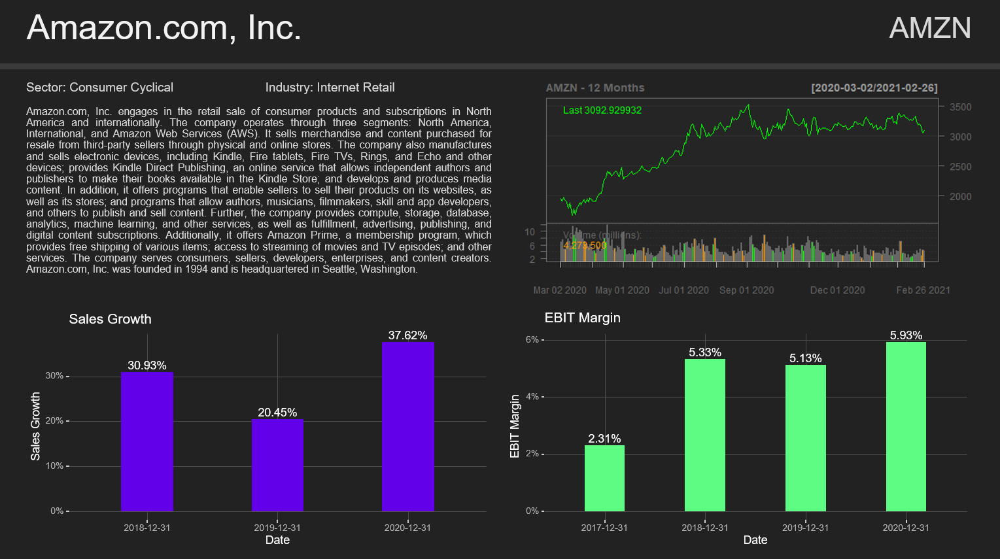

PowerPoint Slides in R via officer: A handholding guide
The officer library, while powerful, is not easy to figure out.
This guide aims to give you all the gotchas to create a professional template in PowerPoint that can be filled in with content from R or shiny.
The 3 gotchas are:
The template slides need to be made as slide masters, not actual slides.
The content placeholders need to be actual PowerPoint placeholders found in the Master slide view, and not textboxes.
You can change the placeholder labels with Alt + F10. Alternatively, Home > Arrange > Selection Pane.
These labels will serve as an ID for the placeholders so you can refer to them in the code.
This tutorial has now morphed into a video
Example: Stock Summary Slide
The example I'll be holding you hand through will be a stock presentation. We'll use data for public companies to create a 1 page stock summary for a given stock ticker. The only user input to the code is the stock ticker. It will look like this. You can see all the code and presentations already generated for companies like Apple, Berkshire and Gamestop on the Github.

1. Open a new Powerpoint file and Delete All Master Templates
Open the Master slides by going to View > Slide Master. Delete everything. Leave nothing behind.
On the one master powerpoint won't let you delete, delete all the elements. Now you should have a blank canvas to design your slide templates.
If you already have a company slide template, you can copy that here. Be sure to name every slide template with Right Click > Rename Layout.
2. Place your content placeholders and design your slide
Now's the time for the first two gotchas.
You create your template within this Master Slide, and for placeholders you use the Powerpoint given ones, not textboxes or other shapes.
The placeholders are found Slide Master > Insert Placeholder > Text. You can use the other placeholder types as well, but as far as I know
the placeholder type doesn't matter for officer. In the placeholder you can type in text to remind yourself what content goes where, but also to format the final text.
Formatting options such as font, size and color will be applied on the text plugged in from R. Pro tip: If you want the text to fully fit the defined placeholder, remove the placeholder margins
which Powerpoint automatically adds. Right click on the placeholder > Format Shape > Text Options > Click on the 3rd Icon > Set all the margins down to 0cm.
3. Label your Placeholders
The labels will serve as placholder IDs so that we can refer to them with officer. Once the placeholders are in place, click Alt + F10 to access the element label menu.
Here you can see that PowerPoint has given the elements useless labels like Text Placeholder 3, and if you've copy pasted placeholders be sure that PowerPoint has duplicated the label as well.
By doubleclicking the labels you can change them into something more identifiable. With these labels you'll tell officer what content to put where.
4. Open R and see how officer percieves the template
With the placeholders labeled we leave powerpoint for the comfort of R. First we load officer and read in the powerpoint template.
library(tidyverse)
library(officer)
library(yfinance)
read_pptx("stock_summary_template.pptx") %>%
officer::layout_properties()
layout_properties() shows you how Officer sees the elements you've just defined.
master_name is the name of the Slide master (the very first slide you see on Slide Master view) and name is the slide name (defined in step 1).
type and id we won't use. ph_label is the most important column and here you should see the labels defined in step 3.
The rest of the columns are dimensions of the elements, offx and offy are the x and y coordinates of the top left corner of the element,
and cx and cy are the width and length of the elements in inches.
These dimensions, especially width(cx) will be especially useful when creating images or tables for your presentation using the flextable package,
where heights and widths have to be defined. That way you can define the placeholder by hand in powerpoint, get the width and height, and create elements in R that exactly fit the placholder space.
5. Fill out the template
Now that we have the template loaded, it's time to create the content and place it in the powerpoint. In our presentation we'll have a company description (text), 12 months price result (image), and Sales Growth and EBIT margin charts (ggplot). First let's load the libraries. The only custom function I have is a function to get and calculate the width and height of placeholders.
# Libraries and functions
library(tidyverse)
library(officer)
library(quantmod)
library(yfinance)
library(ggdark)
library(rvg)
get_placeholder_dims <- function(presentation, label, dim = "width", unit = "in") {
layout <- officer::layout_properties(presentation)
ifelse(
dim=="width",
dimension <- layout$cx[match(label, layout$ph_label)],
dimension <- layout$cy[match(label, layout$ph_label)]
)
if (unit == "in") {
dimension
} else if (unit == "px") {
dimension*96
} else if (unit == "cm") {
dimension * 2.54
} else stop(glue::glue("Only 'in', 'px' and 'cm' are supported as units. You entered '{unit}'."))
}
Let's start at the ending: how the content plugs into the powerpoint.
my_pres <- read_pptx("stock_summary_template.pptx") %>% # reads in the tempalate
remove_slide(index = 1) %>% # deletes the first slide. All presentations must have at lease one actual slide to be saved.
add_slide(layout = "Company Summary", master = "Office Theme") %>% # we add a slide according to the layout we have named "Company Summary" which is under the "Office Theme" master
ph_with(value = company_name, location = ph_location_label(ph_label = "Company Name") ) %>% # put the string company_name in the Company Name placeholder
ph_with(value = ticker, location = ph_location_label(ph_label = "Ticker") ) %>% # put ticker in the ticker placeholder
ph_with(value = glue::glue("Sector: {summary$sector}") , location = ph_location_label(ph_label = "Sector") ) %>%
ph_with(value = glue::glue("Industry: {summary$industry}"), location = ph_location_label(ph_label = "Industry") ) %>% # put the sector and industry strings in their respective placeholders
ph_with(value = summary$longBusinessSummary, location = ph_location_label(ph_label = "Company Summary") ) %>% # put the summary ...
ph_with(value = external_img(ttm_performance_path), location = ph_location_label(ph_label = "TTM Perfromance") ) %>% # HARD PART, look below: take the image located at ttm_performance_path and put it at the TTM Perfromance placeholder
ph_with(value = rvg::dml(ggobj = sales_growth, bg = "transparent"), location = ph_location_label(ph_label = "Sales Growth") ) %>% # take the ggplot object sales_growth and place it. rvg::dml is magic we'll discuss below.
ph_with(value = rvg::dml(ggobj = ebit_margin, bg = "transparent"), location = ph_location_label(ph_label = "EBIT Margin") ) # Same, take the ggplot object ebit_margin and place it
print(my_pres, glue::glue("presentations/{company_name} Summary {Sys.Date()}.pptx")) # Finally print the presentation with the commpany name at a given location. DONE!
Now let's create the hard content. The string based content is easy, basically put the string in value, and define the location with ph_location_label.
For the hard part let's start with a chart for the 12 Month perfromance of the stock. As officer doesn't natively support chart objects from quantmod, we'll convert the output into an image that we'll plug in the powerpoint.
In the code below I have explanations as comments.
presentation <- read_pptx("stock_summary_template.pptx") # let's read in the template as we did
ticker <- "AMZN" # the only input, the stock ticker
company_name <- yfinance::get_company_names(ticker)
summary <- yfinance::get_summaries(ticker) # here we have a business symmary, as well as data on the sector and industry of the company
ttm_performance_path <- glue::glue("presentations/images/{ticker} TTM Chart.png") # The location where we want to save the image. To plug in to the Powerpoint, we use this path along with external_img().
prices <- getSymbols(ticker, from=Sys.Date()-365, to = Sys.Date(), auto.assign = FALSE) # get the price and volatility data from the stock
png(filename = ttm_performance_path,
width = get_placeholder_dims(presentation, "TTM Perfromance", dim ="width", unit = "px"),
height = get_placeholder_dims(presentation, "TTM Perfromance", dim = "hight", unit = "px")
)
# this sets up the image location as well as the width and height in pixels. Using my function, it can pull the data directly from the powerpoint placholder in order to create an image to perfectly fit the predefined area.
chartSeries(prices, name = glue::glue("{ticker} - 12 Months"), type="line") # this is the actual chart
dev.off() # this tells R to save the chart with the previous settings
Next are two ggplots. When we add them to the presentation we wrap them in rvg::dml().
This converts the ggplot into a vector graphic, such that every element of it, like title, axis names, even line colors can be changed directly in Powerpoint. Also resizes don't skew the image proportions.
We could have provided directly the ggplot objects, but the final plots would have been images that get distorted if you change only the width for instance.
Using rvg::dml() gives as much flexibility to do finishing touches in Powerpoint as if you made the chart natively in Office.
ebit_margin <-
get_income(ticker) %>%
mutate(
ebit_margin = ebit / totalRevenue
) %>%
ggplot()+
geom_bar(mapping = aes(x = date, y = ebit_margin), stat = "identity", fill = "#5efc82", width = 0.4)+
geom_text(
mapping = aes(x = date, y = ebit_margin, label = paste0(round(ebit_margin*100, 2), "%")),
vjust = -0.2
)+
scale_y_continuous(labels = scales::percent_format(accuracy = 1))+
labs(title = "EBIT Margin", x = "Date", y = "EBIT Margin")+
dark_theme_gray()+
theme(
text = element_text(size = 11),
plot.background =element_blank(),
panel.background = element_blank(),
panel.grid.major = element_line(color = "grey30", size = 0.2),
panel.grid.minor = element_blank()
)
sales_growth <-
get_income(ticker) %>%
arrange(date) %>%
mutate(
sales_growth = totalRevenue / lag(totalRevenue) - 1
) %>%
dplyr::filter(!is.na(sales_growth)) %>%
ggplot()+
geom_bar(mapping = aes(x = date, y = sales_growth), stat = "identity", fill = "#6200ea", width = 0.4)+
geom_text(
mapping = aes(x = date, y = sales_growth, label = paste0(round(sales_growth*100, 2), "%")),
vjust = -0.2
)+
scale_y_continuous(labels = scales::percent_format(accuracy = 1))+
labs(title = "Sales Growth", x = "Date", y = "Sales Growth")+
dark_theme_gray()+
theme(
text = element_text(size = 11),
plot.background = element_blank(),
panel.background = element_blank(),
panel.grid.major = element_line(color = "grey30", size = 0.2),
panel.grid.minor = element_blank()
)
All of the code together:
```{r}
library(tidyverse)
library(officer)
library(quantmod)
library(yfinance)
library(ggdark)
library(rvg)
get_placeholder_dims <- function(presentation, label, dim = "width", unit = "in") {
layout <- officer::layout_properties(presentation)
ifelse(
dim=="width",
dimension <- layout$cx[match(label, layout$ph_label)],
dimension <- layout$cy[match(label, layout$ph_label)]
)
if (unit == "in") {
dimension
} else if (unit == "px") {
dimension*96
} else if (unit == "cm") {
dimension * 2.54
} else stop(glue::glue("Only 'in', 'px' and 'cm' are supported as units. You entered '{unit}'."))
}
```
```{r}
presentation <- read_pptx("stock_summary_template.pptx")
ticker <- "AMZN"
company_name <- yfinance::get_company_names(ticker)
summary <- yfinance::get_summaries(ticker)
ttm_performance_path <- glue::glue("presentations/images/{ticker} TTM Chart.png")
prices <- getSymbols(ticker, from=Sys.Date()-365, to = Sys.Date(), auto.assign = FALSE)
png(filename = ttm_performance_path,
width = get_placeholder_dims(presentation, "TTM Perfromance", dim ="width", unit = "px"),
height = get_placeholder_dims(presentation, "TTM Perfromance", dim = "hight", unit = "px")
)
chartSeries(prices, name = glue::glue("{ticker} - 12 Months"), type="line")
dev.off()
```
```{r}
ebit_margin <-
get_income(ticker) %>%
mutate(
ebit_margin = ebit / totalRevenue
) %>%
ggplot()+
geom_bar(mapping = aes(x = date, y = ebit_margin), stat = "identity", fill = "#5efc82", width = 0.4)+
geom_text(
mapping = aes(x = date, y = ebit_margin, label = paste0(round(ebit_margin*100, 2), "%")),
vjust = -0.2
)+
scale_y_continuous(labels = scales::percent_format(accuracy = 1))+
labs(title = "EBIT Margin", x = "Date", y = "EBIT Margin")+
dark_theme_gray()+
theme(
text = element_text(size = 11),
plot.background =element_blank(),
panel.background = element_blank(),
panel.grid.major = element_line(color = "grey30", size = 0.2),
panel.grid.minor = element_blank()
)
```
```{r}
sales_growth <-
get_income(ticker) %>%
arrange(date) %>%
mutate(
sales_growth = totalRevenue / lag(totalRevenue) - 1
) %>%
dplyr::filter(!is.na(sales_growth)) %>%
ggplot()+
geom_bar(mapping = aes(x = date, y = sales_growth), stat = "identity", fill = "#6200ea", width = 0.4)+
geom_text(
mapping = aes(x = date, y = sales_growth, label = paste0(round(sales_growth*100, 2), "%")),
vjust = -0.2
)+
scale_y_continuous(labels = scales::percent_format(accuracy = 1))+
labs(title = "Sales Growth", x = "Date", y = "Sales Growth")+
dark_theme_gray()+
theme(
text = element_text(size = 11),
plot.background = element_blank(),
panel.background = element_blank(),
panel.grid.major = element_line(color = "grey30", size = 0.2),
panel.grid.minor = element_blank()
)
```
```{r}
my_pres <- presentation %>%
remove_slide(index = 1) %>%
add_slide(layout = "Company Summary", master = "Office Theme") %>%
ph_with(value = company_name, location = ph_location_label(ph_label = "Company Name") ) %>%
ph_with(value = ticker, location = ph_location_label(ph_label = "Ticker") ) %>%
ph_with(value = glue::glue("Sector: {summary$sector}") , location = ph_location_label(ph_label = "Sector") ) %>%
ph_with(value = glue::glue("Industry: {summary$industry}"), location = ph_location_label(ph_label = "Industry") ) %>%
ph_with(value = summary$longBusinessSummary, location = ph_location_label(ph_label = "Company Summary") ) %>%
ph_with(value = external_img(ttm_performance_path), location = ph_location_label(ph_label = "TTM Perfromance") ) %>%
ph_with(value = rvg::dml(ggobj = sales_growth, bg = "transparent"), location = ph_location_label(ph_label = "Sales Growth") ) %>%
ph_with(value = rvg::dml(ggobj = ebit_margin, bg = "transparent"), location = ph_location_label(ph_label = "EBIT Margin") )
print(my_pres, glue::glue("presentations/{company_name} Summary {Sys.Date()}.pptx"))
```
There you have it. You can find the code also on Github. I'm sure I've dropped your hand at some point, so to drive the (power)point across, I'll be making a youtube tutorial as well. Stay tuned and feel free to reach out with questions.
Have a comment? Want to be added to the R Recipes mailing list? Email Me